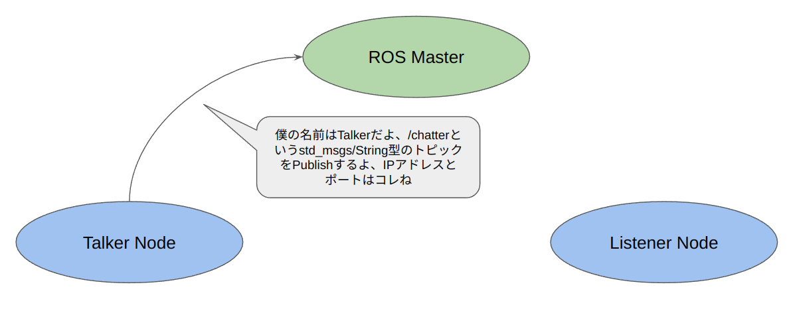
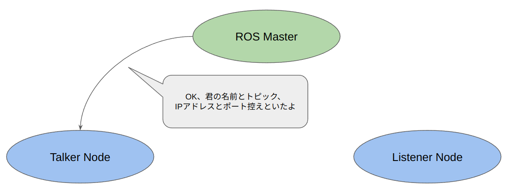
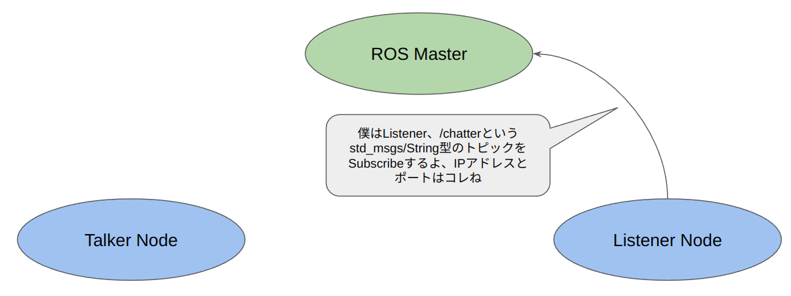
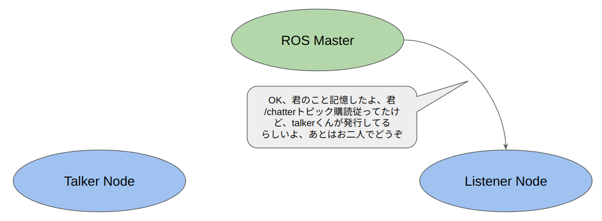
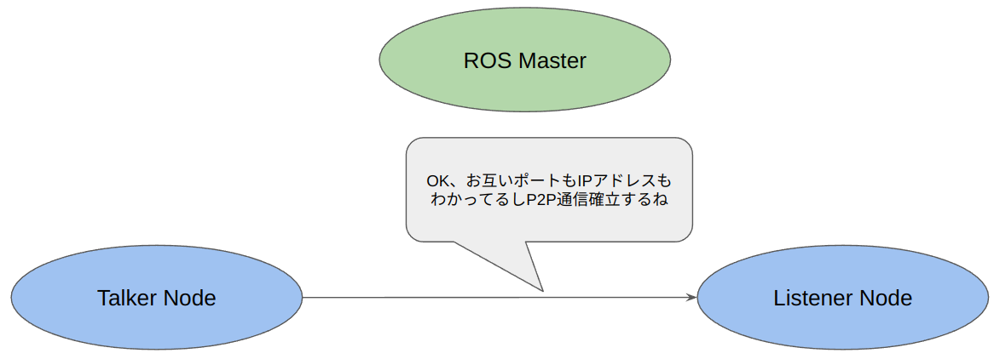
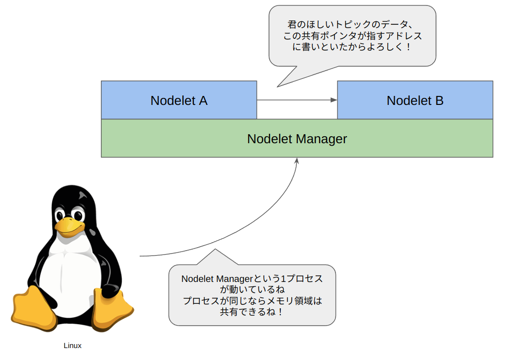

ROS2とは？#
ROS1とROS2の関係性#
まず、ROSとはなにか？ということについてわかりやすい資料がこちらになります。
ロボットのソフトウェアはには以下の性質があります。
- 密結合になりがち（ちゃんと動くシステムを作ろうとすると数万行になるのは当たり前）
- イベントドリブンになりがち（〇〇のセンサーに反応があったら〇〇する）という
ROSを使うことによって、使いやすいロボットソフトウェアを作ることができます。
以下に具体的なメリットを上げておきます。
- 同じハードウェアやアルゴリズムを使っている人がいた場合、開発期間が短縮できて本質的な研究開発活動に時間を使える
- 部品化ができるので「代々伝わる秘伝のタレ」化しにくい
- 大量のコードを読まなくてもロボットをとりあえず動く状態まで持っていける
- 部品のデバッグをしっかりしておけばデバッグ工数が削減できる
しかし、ROS1にはその延長線上で開発を続けていては解決困難な問題があり、それを解決するべく1から再開発されたのがROS2です。
ROSの最後のディストリビューションであるNoeticは2025年にサポート終了が予告されており、そろそろROS2に移行しておかないとせっかく作った開発資産が使えなくなってしまうリスクがあります。
Note
なお、ROS2の正式な表記はスペースありの ROS 2 になります（参考）。日本語ではスペースなしのほうが読みやすいため、多くの和文書籍と同じく、このハンズオン資料でもスペースなしの表記としています。
ROS2が作られた理由#
ライセンス問題#
ROS1時代はBSDライセンス等でコアライブラリが提供されてきました。 しかし、コアライブラリの一部にコピーレフトなライセンスに依存する可能性のあるものが含まれていたり、初期の開発過程がトレースされていなかったことによりライセンスに関して 不明瞭な部分が存在しました。 商用アプリケーション開発に於いてはこれは大きな法的問題に発生しうる可能性があり、1からROS2を開発する大きな要員の1つになりました。
ROS2からはApache 2.0ライセンスが採用され、それに準拠するようにコアライブラリ の開発工程が管理されているため安心して商用利用が可能です。
Apache 2.0 License
Apache License
Version 2.0, January 2004
http://www.apache.org/licenses/
TERMS AND CONDITIONS FOR USE, REPRODUCTION, AND DISTRIBUTION
1. Definitions.
"License" shall mean the terms and conditions for use, reproduction,
and distribution as defined by Sections 1 through 9 of this document.
"Licensor" shall mean the copyright owner or entity authorized by
the copyright owner that is granting the License.
"Legal Entity" shall mean the union of the acting entity and all
other entities that control, are controlled by, or are under common
control with that entity. For the purposes of this definition,
"control" means (i) the power, direct or indirect, to cause the
direction or management of such entity, whether by contract or
otherwise, or (ii) ownership of fifty percent (50%) or more of the
outstanding shares, or (iii) beneficial ownership of such entity.
"You" (or "Your") shall mean an individual or Legal Entity
exercising permissions granted by this License.
"Source" form shall mean the preferred form for making modifications,
including but not limited to software source code, documentation
source, and configuration files.
"Object" form shall mean any form resulting from mechanical
transformation or translation of a Source form, including but
not limited to compiled object code, generated documentation,
and conversions to other media types.
"Work" shall mean the work of authorship, whether in Source or
Object form, made available under the License, as indicated by a
copyright notice that is included in or attached to the work
(an example is provided in the Appendix below).
"Derivative Works" shall mean any work, whether in Source or Object
form, that is based on (or derived from) the Work and for which the
editorial revisions, annotations, elaborations, or other modifications
represent, as a whole, an original work of authorship. For the purposes
of this License, Derivative Works shall not include works that remain
separable from, or merely link (or bind by name) to the interfaces of,
the Work and Derivative Works thereof.
"Contribution" shall mean any work of authorship, including
the original version of the Work and any modifications or additions
to that Work or Derivative Works thereof, that is intentionally
submitted to Licensor for inclusion in the Work by the copyright owner
or by an individual or Legal Entity authorized to submit on behalf of
the copyright owner. For the purposes of this definition, "submitted"
means any form of electronic, verbal, or written communication sent
to the Licensor or its representatives, including but not limited to
communication on electronic mailing lists, source code control systems,
and issue tracking systems that are managed by, or on behalf of, the
Licensor for the purpose of discussing and improving the Work, but
excluding communication that is conspicuously marked or otherwise
designated in writing by the copyright owner as "Not a Contribution."
"Contributor" shall mean Licensor and any individual or Legal Entity
on behalf of whom a Contribution has been received by Licensor and
subsequently incorporated within the Work.
2. Grant of Copyright License. Subject to the terms and conditions of
this License, each Contributor hereby grants to You a perpetual,
worldwide, non-exclusive, no-charge, royalty-free, irrevocable
copyright license to reproduce, prepare Derivative Works of,
publicly display, publicly perform, sublicense, and distribute the
Work and such Derivative Works in Source or Object form.
3. Grant of Patent License. Subject to the terms and conditions of
this License, each Contributor hereby grants to You a perpetual,
worldwide, non-exclusive, no-charge, royalty-free, irrevocable
(except as stated in this section) patent license to make, have made,
use, offer to sell, sell, import, and otherwise transfer the Work,
where such license applies only to those patent claims licensable
by such Contributor that are necessarily infringed by their
Contribution(s) alone or by combination of their Contribution(s)
with the Work to which such Contribution(s) was submitted. If You
institute patent litigation against any entity (including a
cross-claim or counterclaim in a lawsuit) alleging that the Work
or a Contribution incorporated within the Work constitutes direct
or contributory patent infringement, then any patent licenses
granted to You under this License for that Work shall terminate
as of the date such litigation is filed.
4. Redistribution. You may reproduce and distribute copies of the
Work or Derivative Works thereof in any medium, with or without
modifications, and in Source or Object form, provided that You
meet the following conditions:
(a) You must give any other recipients of the Work or
Derivative Works a copy of this License; and
(b) You must cause any modified files to carry prominent notices
stating that You changed the files; and
(c) You must retain, in the Source form of any Derivative Works
that You distribute, all copyright, patent, trademark, and
attribution notices from the Source form of the Work,
excluding those notices that do not pertain to any part of
the Derivative Works; and
(d) If the Work includes a "NOTICE" text file as part of its
distribution, then any Derivative Works that You distribute must
include a readable copy of the attribution notices contained
within such NOTICE file, excluding those notices that do not
pertain to any part of the Derivative Works, in at least one
of the following places: within a NOTICE text file distributed
as part of the Derivative Works; within the Source form or
documentation, if provided along with the Derivative Works; or,
within a display generated by the Derivative Works, if and
wherever such third-party notices normally appear. The contents
of the NOTICE file are for informational purposes only and
do not modify the License. You may add Your own attribution
notices within Derivative Works that You distribute, alongside
or as an addendum to the NOTICE text from the Work, provided
that such additional attribution notices cannot be construed
as modifying the License.
You may add Your own copyright statement to Your modifications and
may provide additional or different license terms and conditions
for use, reproduction, or distribution of Your modifications, or
for any such Derivative Works as a whole, provided Your use,
reproduction, and distribution of the Work otherwise complies with
the conditions stated in this License.
5. Submission of Contributions. Unless You explicitly state otherwise,
any Contribution intentionally submitted for inclusion in the Work
by You to the Licensor shall be under the terms and conditions of
this License, without any additional terms or conditions.
Notwithstanding the above, nothing herein shall supersede or modify
the terms of any separate license agreement you may have executed
with Licensor regarding such Contributions.
6. Trademarks. This License does not grant permission to use the trade
names, trademarks, service marks, or product names of the Licensor,
except as required for reasonable and customary use in describing the
origin of the Work and reproducing the content of the NOTICE file.
7. Disclaimer of Warranty. Unless required by applicable law or
agreed to in writing, Licensor provides the Work (and each
Contributor provides its Contributions) on an "AS IS" BASIS,
WITHOUT WARRANTIES OR CONDITIONS OF ANY KIND, either express or
implied, including, without limitation, any warranties or conditions
of TITLE, NON-INFRINGEMENT, MERCHANTABILITY, or FITNESS FOR A
PARTICULAR PURPOSE. You are solely responsible for determining the
appropriateness of using or redistributing the Work and assume any
risks associated with Your exercise of permissions under this License.
8. Limitation of Liability. In no event and under no legal theory,
whether in tort (including negligence), contract, or otherwise,
unless required by applicable law (such as deliberate and grossly
negligent acts) or agreed to in writing, shall any Contributor be
liable to You for damages, including any direct, indirect, special,
incidental, or consequential damages of any character arising as a
result of this License or out of the use or inability to use the
Work (including but not limited to damages for loss of goodwill,
work stoppage, computer failure or malfunction, or any and all
other commercial damages or losses), even if such Contributor
has been advised of the possibility of such damages.
9. Accepting Warranty or Additional Liability. While redistributing
the Work or Derivative Works thereof, You may choose to offer,
and charge a fee for, acceptance of support, warranty, indemnity,
or other liability obligations and/or rights consistent with this
License. However, in accepting such obligations, You may act only
on Your own behalf and on Your sole responsibility, not on behalf
of any other Contributor, and only if You agree to indemnify,
defend, and hold each Contributor harmless for any liability
incurred by, or claims asserted against, such Contributor by reason
of your accepting any such warranty or additional liability.
END OF TERMS AND CONDITIONS
APPENDIX: How to apply the Apache License to your work.
To apply the Apache License to your work, attach the following
boilerplate notice, with the fields enclosed by brackets "[]"
replaced with your own identifying information. (Don't include
the brackets!) The text should be enclosed in the appropriate
comment syntax for the file format. We also recommend that a
file or class name and description of purpose be included on the
same "printed page" as the copyright notice for easier
identification within third-party archives.
Copyright [yyyy] [name of copyright owner]
Licensed under the Apache License, Version 2.0 (the "License");
you may not use this file except in compliance with the License.
You may obtain a copy of the License at
http://www.apache.org/licenses/LICENSE-2.0
Unless required by applicable law or agreed to in writing, software
distributed under the License is distributed on an "AS IS" BASIS,
WITHOUT WARRANTIES OR CONDITIONS OF ANY KIND, either express or implied.
See the License for the specific language governing permissions and
limitations under the License.
単一障害点の排除#
ROS1時代にはros masterというプロセスがrosparamの管理、新規ノードの発見やトピック間の接続という重要な仕事を担っていました。
ros masterの役割の一例、TalkerとListenerノードの接続     
そのため、ROS1アプリケーションに於いてros masterが稼働中のシステムで落ちてしまうとシステム全体が機能不全になる可能性があります。 単一障害点の排除は長期間運用されるアプリケーションに於いては非常に重要な課題の1つです。 ros masterの挙動に関する日本語ドキュメントはこちらにあります。
効率的なデータ転送#
ROS1時代に存在したnodeletという仕組みをご存じでしょうか？ nodeletは通常TCP/IPパケット通信により実現されるROSのトピック通信を共有ポインタを用いたゼロコピー通信に置き換えます。 この際、nodeletはnodelet_managerにロードされる共有ライブラリとして実装されます。 この仕組みをROS2向けに再設計したのが後述するROS2におけるコンポーネント指向であり、これを使用することで非常に高速にデータ通信が可能です。 
Windows対応#
ROS1はLinuxにかなり依存しており、Windowsで動かすにはWSLを使ったりと工夫が必要でした。 研究開発や、スタンドアローンなロボットであればROS1のLinux依存の強さも全く問題にはならなかったのですが、 商用アプリケーションを開発するときに一般のご家庭で動いているパソコンOSとして圧倒的なシェアを持っているWindowsでアプリケーションが作れないのは問題になります。 そこでROS2からはWindowsにも対応し、(一応Macにも対応はしています。)Windows上でもロボットアプリケーション開発が可能になっています。 ROS1時代にはWindowsとROS1アプリケーションの通信はrosbridge protocolか nodejsのROSクライアントくらいしかなかったので嬉しい人には嬉しい仕様かもしれません。
REP 2000 -- ROS 2 Releases and Target Platforms (ROS.org)
Note The following applies to ROS 2 releases after Foxy. Prior to Foxy, releases were made more frequently but with shorter support due to the fact that many foundational parts of ROS 2 were still being heavily developed. New ROS 2 releases will be published in a time based fashion every 12 months.
ROS1とROS2の違い#
DDSの採用#
DDSとは、OMGという団体が規格を策定したPub/Sub型のデータ通信システムです。 ROSと同じようにデータのスキーマも定義が可能です。 DDSはUDPで通信を行ない、ブロードキャストパケットを用いて自動的に通信相手を探索して接続が可能です。 それによってROS1時代に存在したros masterという単一障害点がなくなりました。 (ros2daemonというros masterの類似プログラムは存在しますが、居ると通信接続が早くなるだけで時間をかければros2daemonが無くても通信相手の探索は可能です。)


図表出典：https://www.openrtm.org/openrtm/ja/doc/developersguide/advanced_rt_system_programming/dds_comm_use
DDSは規格であるため、DDSにはFast DDS / Cyclone DDSといったさまざまな実装が存在します。
GitHub - eclipse-cyclonedds/cyclonedds: Eclipse Cyclone DDS project
Eclipse Cyclone DDS is a very performant and robust open-source implementation of the OMG DDS specification. Cyclone DDS is developed completely in the open as an Eclipse IoT project (see eclipse-cyclone-dds) with a growing list of adopters (if you're one of them, please add your logo).
GitHub - eProsima/Fast-DDS: The most complete DDS - Proven: Plenty of success cases.
eprosima Fast DDS (formerly Fast RTPS) is a C++ implementation of the DDS (Data Distribution Service) standard of the OMG (Object Management Group). eProsima Fast DDS implements the RTPS (Real Time Publish Subscribe) protocol, which provides publisher-subscriber communications over unreliable transports such as UDP, as defined and maintained by the Object Management Group (OMG) consortium.
ROS2では以下のようにDDSをインストールし、環境変数を設定することで簡単にDDSの実装を切り替えることが可能です。
Fast DDSを採用する場合
sudo apt install ros-$ROS_DISTRO-rmw-fastrtps-cpp
export RMW_IMPLEMENTATION=rmw_fastrtps_cpp
Cyclone DDSを採用する場合
sudo apt install ros-$ROS_DISTRO-rmw-cyclonedds-cpp
export RMW_IMPLEMENTATION=rmw_cyclonedds_cpp
ROBOSYM 2020にfuRoの原先生が出された各種ロボットミドルウェア性能評価に関する発表(原祥尭ら、"ロボティクスミドルウェアROS、ROS2、Ignition、Isaacの機能比較と通信評価"、ROBOSYM 2020.)によると、Cyclone DDSが最も性能が良さそうであることが示されています。
Yoshitaka HARA on Twitter: "ROS、ROS2、Ignition、Isaac のメッセージ通信の遅延と受信抜けを評価した結果です。赤字は問題箇所。ROS (TCP_NODELAY) と Ignition の性能が良い。プロットしたグラフなど、詳細は ROBOSYM2020 で発表します。ROS2 は概念。使用する DDS 実装によって、性能が大きく異なるようです。#rosjp pic.twitter.com/ir7TWUs6Wu / Twitter"
ROS、ROS2、Ignition、Isaac のメッセージ通信の遅延と受信抜けを評価した結果です。赤字は問題箇所、ROS (TCP_NODELAY) と Ignition の性能が良い。プロットしたグラフなど、詳細は ROBOSYM2020 で発表します。ROS2 は概念。使用する DDS 実装によって、性能が大きく異なるようです。#rosjp pic.twitter.com/ir7TWUs6Wu
このデータは少し古いバージョンのものになりますが、筆者も複数のDDSを使ったところCyclone DDSが最も安定していると考えています。 Cyclone DDSやFast DDS以外にもIce Oryxといった共有メモリ転送による高速転送機能を持ったDDSが存在したりと、光る独自機能を持ったDDSも存在します。
GitHub - eclipse-iceoryx/iceoryx: Eclipse iceoryx™ - true zero-copy inter-process-communication
Great that you've made it to this neat Eclipse project! Let's get you started by providing a quick background tour, introducing the project scope and all you need for installation and a first running example. So first off: What is iceoryx?
NodeとExecutor#
Executorは効率的なデータ転送の項目で紹介した ROS2（C++）ではnodeはrclcpp::Node型を継承したクラスとして実装されます。
namespace pcl_apps
{
class CropBoxFilterComponent : public rclcpp::Node
{
public:
PCL_APPS_CROP_BOX_FILTER_PUBLIC
explicit CropBoxFilterComponent(const rclcpp::NodeOptions & options);
}
} // namespace pcl_spps
上記ソースコードの出典はこちらになります。
PCL_APPS_CROP_BOX_FILTER_PUBLICはWindows/Linuxといった等マルチプラットフォームに対応したcomponentを作るための書式です。
詳細はこちらを参照してください。
rclcpp::NodeクラスはROS2 Node実装に必要な機能がすべて実装されています。
具体的なサンプルコードを示しますと、下記のようにrclcpp::Nodeクラスに実装されているcreate_subscription/create_publisher関数を使えばpublisher/subsceriberを作ることができます。
pub_ = create_publisher<sensor_msgs::msg::PointCloud2>("~/points_filtered", 1);
sub_ = create_subscription<sensor_msgs::msg::PointCloud2>(
"~/points", 1, std::bind(&CropBoxFilterComponent::pointsCallback, this, std::placeholders::_1));
その他にも、rosparamを定義、取得したりも可能です。
declare_parameter("max_x", 1.0);
get_parameter("max_x", max_x_);
このrclcpp::Node型を継承して作られた自作ノードを複数読み込み、複数のノードを1つのプロセスで実現するためのクラスをExecutorと呼びます。

詳細なドキュメントはこちらのドキュメントで確認できます。 Subscriberを生成するときに登録された関数はコールバック関数としてExecutorに登録され、 「新しいデータが届いた」などのイベントをキャッチしてそれに対応するコールバック関数を呼び出すことで複数のノードを1つのプロセス上で動作させることを実現しています。 こうすることによって複数のノードで同じメモリ領域を共有できるようになり、同じExecutor上で動作しているノード間でトピックをやり取りする際にはメモリでデータをやり取りするため非常に高速で通信が可能です。 どの程度早くなるかというと、こちらの記事の計測結果が参考になりました。
ROS2で同一デバイス内画像通信の遅延について知りたくて色々試した話 - Qiita
単一デバイス（Ultra96）内でROS2通信を利用して画像を送受信した場合、 画像のサイズ、圧縮するか否か、使用するDDS、などを変えて画像の送受信にかかる時間を測定・評価しました。どちらかというと通信遅延そのものについての評価というより、画像を送信する際にかかる時間の評価です。ですので、圧縮画像送信の際には画像の圧縮にかかる時間も遅延時間に含んでいたりします。
非圧縮の画像データ(sensor_msgs/Image型)のデータを746msで送信することが実現できており、圧縮する時間よりも同じExecutorに載せて通信してしまうのが早いということが伺えます。
自作のROS2 NodeをExecutorに乗せる際には以下のようなコードを記述すれば可能です。
int main(int argc, char * argv[])
{
rclcpp::init(argc, argv);
rclcpp::executors::MultiThreadedExecutor exec;
rclcpp::NodeOptions options;
auto hermite_path_planner =
std::make_shared<hermite_path_planner::HermitePathPlannerComponent>(options);
auto pure_pursuit_planner =
std::make_shared<pure_pursuit_planner::PurePursuitPlannerComponent>(options);
auto curve_planner = std::make_shared<velocity_planner::CurvePlannerComponent>(options);
auto obstacle_planner = std::make_shared<velocity_planner::ObstaclePlannerComponent>(options);
auto velocity_planner = std::make_shared<velocity_planner::VelocityPlannerComponent>(options);
auto stop_planner = std::make_shared<velocity_planner::StopPlannerComponent>(options);
auto planner_concatenator =
std::make_shared<velocity_planner::PlannerConcatenatorComponent>(options);
auto local_waypoint_server =
std::make_shared<local_waypoint_server::LocalWaypointServerComponent>(options);
exec.add_node(hermite_path_planner);
exec.add_node(pure_pursuit_planner);
exec.add_node(curve_planner);
exec.add_node(obstacle_planner);
exec.add_node(velocity_planner);
exec.add_node(stop_planner);
exec.add_node(planner_concatenator);
exec.add_node(local_waypoint_server);
exec.spin();
rclcpp::shutdown();
return 0;
}
上記のコードの出典はこちらになります。
ちなみに、明示的にExecutorを使用しないこのような記載方法もあります。
int main(int argc, char * argv[])
{
rclcpp::init(argc, argv);
rclcpp::NodeOptions options;
auto component = std::make_shared<pcl_apps::CropBoxFilterComponent>(options);
rclcpp::spin(component);
rclcpp::shutdown();
return 0;
}
rclcpp::spin(component);
しかし、rclcpp::spin() 関数の実装を追いかけると1つだけNodeを読み込んだExecutorをインスタンス化し、spinを回していることがわかります。 つまり、rclcppを使った場合すべてのノードはExecutorの上で動いています。
コンポーネント指向#
前の章で紹介したように、Executorは複数のノードを１つのプロセスで起動できますが、
前の章の書き方ではコンパイル時にすべてのノード構成を決めておかなければなりません。
つまり、バイナリ配布したパッケージのノード構成をプログラム実行時に切り替えたりできません。
動的にExecutorにコンポーネントを読み込ませるのを可能にする修法がコンポーネント指向です。
コンポーネント指向のノードを記述するには前の章で記述したとおりにrclcpp::Node型を継承してのノードのクラスを実装します。
それに加えてRCLCPP_COMPONENTS_REGISTER_NODEマクロを使用して「このクラスはコンポーネントである」という情報をマクロで記録します。
#include <rclcpp_components/register_node_macro.hpp>
RCLCPP_COMPONENTS_REGISTER_NODE(scan_segmentation::ScanSegmentationComponent)
さらに、CMakeLists.txtに下記の変更を加えament_cmakeのシステムにC++のマクロで登録したクラスがどの共有ライブラリに入っているかという情報を記録します。
rclcpp_components_register_nodes(scan_segmentation_component
"scan_segmentation::ScanSegmentationComponent")
出来上がったコンポーネントは後述するros2 launchを使用して動的に立ち上げることができます。
ros2 launchによるより柔軟な起動手段の提供#
ROS2ではlaunchファイルがPythonになるという言説が有りますが、筆者はこれは誤りであると考えます。 ROS2のPython形式のlaunchファイルはあくまでROS1時代にあったroslaunch APIの後継であり xml形式やyaml形式のlaunchファイルがROS1時代のxml形式のlaunchファイルの後継であると考えます。
python形式でlaunchファイルが記述できるようになったことでros2 launchでは下記のような複雑な起動シーケンスもlaunchファイルで記述できるようになりました。 - 10秒後にあるノードを落とす - あるノードを立ち上げて準備ができてから次のノードを立ち上げる
さまざまなケースがあるので、詳細は省きますが、最も一般的なros2 componentを読み込むlaunchファイルのサンプルを示しておきます。
def generate_launch_description():
container = ComposableNodeContainer(
name='preception_bringup_container',
namespace='perception',
package='rclcpp_components',
executable='component_container_mt',
composable_node_descriptions=[
# getImageDecompressorComponent('front_camera'),
# getImageRectifyComponent('front_camera'),
getScanSgementationComponent(),
getCropHullFilterComponent(),
getPointCloudToLaserScanComponent(),
getRadiusOutlierRemovalComponent('front_lidar'),
getRadiusOutlierRemovalComponent('rear_lidar'),
getRadiusOutlierRemovalComponent('right_lidar'),
getRadiusOutlierRemovalComponent('left_lidar'),
getPointsTransformComponent('front_lidar'),
getPointsTransformComponent('rear_lidar'),
getPointsTransformComponent('right_lidar'),
getPointsTransformComponent('left_lidar'),
getPointsConcatenateComponent(),
getCostmapCalculatorComponent(),
getCostmapfilterComponent(),
getCostmapinterpolationComponent()
],
output='screen'
)
return launch.LaunchDescription([
container
])
def getPointsTransformComponent(lidar_name):
config_directory = os.path.join(
ament_index_python.packages.get_package_share_directory('perception_bringup'),
'config')
param_config = os.path.join(config_directory, lidar_name+'_points_transform.yaml')
with open(param_config, 'r') as f:
params = yaml.safe_load(f)[lidar_name + '_points_transform_node']['ros__parameters']
component = ComposableNode(
package='pcl_apps',
plugin='pcl_apps::PointsTransformComponent',
namespace='/perception/'+lidar_name,
name='points_transform_node',
remappings=[('input', lidar_name+'/points_raw'), ('output', 'points_raw/transformed')],
parameters=[params])
return component
こちらのサンプルコードの出典はこちらになります 上記のようなコードを記述することで、自作のComponentを読み込ませてROS2 Applicationを立ち上げることが可能になります。
Note
Galactic/Humbleのあたりからかなりxmlのlaunchも機能が整ってきたので、今後はかなりのケースがxmlでもカバーできると思われます。